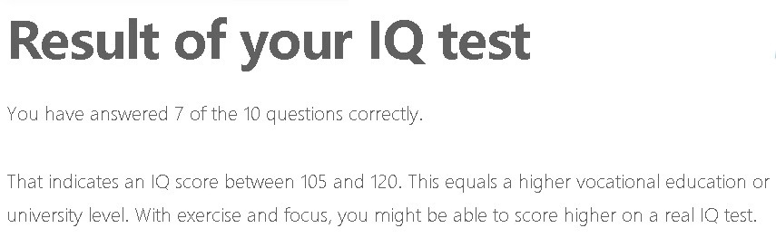
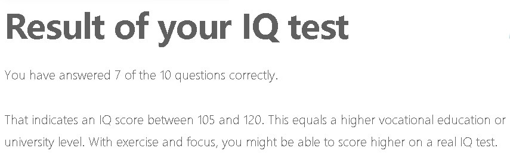

Hello everyone, welcome everyone to my webpage, let me introduce myself here briefly, I am Zijie Luo from China, you can also call me Damon, now I am studying at RMIT University, majoring in IT courses, my students number is s3809908 and the email address is s3809908@student.rmit.edu.au. If you want to make friends or have any questions, you can contact me via this email address.
In fact, I have a small hobby that I especially like cats. I have three cats in China. After I came here, I also have two cats at home. I think cats are good friends of human beings. Getting along with them can make our lives full. pleasure.

1.I am interested in IT because IT is like a magical tool that allows me to communicate with my computer through code. Another important reason is that society is now more and more dependent on the Internet, so learning IT is very helpful for my future personal employment. I started to be interested in IT when I first started to contact the Internet, so I decided to start learning IT at college and be able to help others through the knowledge I learned.
2.The reason why I chose to study IT at RMIT is very important. It is also a point that RMIT is different from other schools. RMIT is a very practical school. Most other schools may be more theoretical, but IT. It takes a lot of practice to master, so RMIT is definitely a good school to learn IT.
3.During my studies at RMIT, I hope to learn computer languages such as JAVA, C+. These languages can help me write my own programs in the future. A good program can usually facilitate people's lives. If I make the program later, Being able to help people, the years of studying at RMIT will be a significant time in my life.
The links and images below are the ideal job I feel, https://www.seek.com.au/job/39710936?searchrequesttoken=b2da2bc2-5566-4254-8ae9-d412a88ae461&type=standout.

The task of this job is simply to solve the first and second level troubleshooting of the IT issues, which can be divided into the following points: 1.Provide technical support to internal users and customers. 2. Maintain and Update IT system and knowledge asset, 3.Write report about problems and solutions.
The main reason why this job attracts me is that it can help others in time, and can learn and learn more when working. For example, if you encounter similar problems next time, you can know how to solve it. This is a very effective way to improve yourself, and the skills needed for this job is relatively easy.
The skills required for this job are further divided into the following points.
1.LAN and WAN network support and administration skills 2. Active Directory, O365, DNS skills. 3.problem solving skills. 4.Windows Server 2012 or above administration and support 5.Windows Desktop Support – Windows 10. 6.Proficiency on Level 1/2.
And you must have the qualification to live and work in Australia to apply for this job.
The skills, qualifications and experience I have now are far from enough, because I only officially studied IT a month ago, so in order to achieve the skill standards required for this job, I must master and skillfully use my studies during RMIT. Go to the knowledge, and learn more deeper content in your free time, such as Active Directory, O365, DNS skills required for this job. When I am about to complete the RMIT course, I need an internship to train my skills, I will be working officially. Before, grasp any opportunity to exercise so that I can accumulate more experience to help me get the job done.
 

The first test proved that I am a protector who likes to take charge of things and be enthusiastic.
The second test proved that I am a visual learner. I usually understand and learn things through vision, and I can easily attract attention with rich image colors and sounds.
The third is an intelligence test. The result of the test is that my IQ is between 105 and 120, which is equivalent to the normal college level.
Summarizing the results of these three tests, I am a person who can be seriously responsible in the team, will complete their tasks on time and can help others, but in the team work may be affected by other things, when forming the team I need a strong leader to supervise me, and I can be the one who helps the leader manage the team.The project I want to develop is a multi-language translation application.The application has integrated professional dictionary in Chinese, English, Japanese, Korean and French. By switching the language environment, you can quickly translate the required content. The web version has a translation and supports Chinese, English, Japanese, Korean, French, Spanish and Russian. Translating in seven languages, and when you say a word, the app can automatically recognize and convert to the language you want to translate.
According to statistics, in 2000, a total of 600,000 people from China went abroad to study abroad. This is the first time that more than 600,000 students have studied abroad. This shows that the number of students studying abroad is increasing every year, so a good translation application can solve many people's language barriers. One thing different from other translation tools is that my project will be equipped with artificial intelligence, which is more convenient. Just like Siri, it can help users solve some small problems and bring a better experience to users.
The main users of this project can be divided into two large groups, one group is a student and the other group is a working group abroad. Students can also be divided into two parts, foreign students and students in China, major users or international students, foreign students will be exposed to more different languages, especially those who have just studied abroad, have a weak language foundation, and cannot understand the basic language well. This software can help them learn. For example, when they are in class, they open the application and start the voice translation function. The words spoken by the teacher can be translated into the language they understand, or the words spoken by the teacher can be saved in the mobile phone. Or on the computer, so that they can review the contents of the class at home.
The other part of the population is the one who has graduated from work abroad. Those who have graduated must have a very good English foundation, but this does not mean that they can respond smoothly to various language problems at work. Different jobs have Different terminology, these terms are not commonly understood by graduates, so when they don't understand the various industry terminology, they open the application and start the terminology translation function, so they can continue to work smoothly, without being unfamiliar. The troubles of words, of course, this feature also supports speech translation.
I want to develop this project in order to go beyond all other translation software, without any shortcomings, but nothing is perfect. I can now think of a serious problem if this software is developed and widely used. That is, people will rely too much on this translation software, because it is too powerful, so that people completely give up the ability and opportunity to learn the language autonomously. I still can't think of any solution to this problem, but in the future, I might set a limit so that people don't rely too much. Because the purpose of developing this project is to help people solve problems in study or work. If the cart before the horse is turned upside down, then the software has no value.
I don't know much about the tools and technologies that need to develop this software. Because I mentioned it before, I don't know much about the IT discipline, so I don't know what technology and tools to use. In the future study, I will learn and learn for this goal.
Same as last paragraph
If this software is really developed and widely used in the future, and people are not too dependent, but use it correctly. Then the invention of this project will solve most of the problems of people's study and work, and even close the distance between the country and the country, making it easier for people from different countries to communicate and communicate. It can be said that it is a tool make the world closer. It can even play a major role in peace throughout the world.